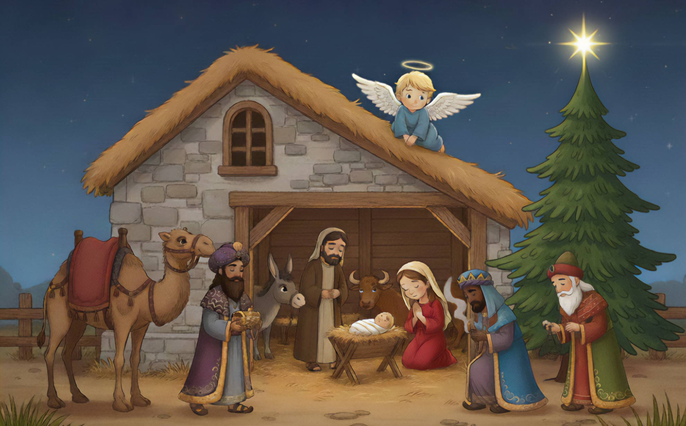

For Immediate Release
"Gabriel the Brave"—Ignited by a Child’s "Why the Angel?"—Hits #1 Best Seller
FORT WORTH, Texas – November 19, 2025

The Christmas season has arrived early for lifelong friends and creators Carter Amon and Darryl Erby. Their newly released title, Gabriel the Brave: A Christmas Story, has officially hit #1 Best Seller status on Amazon in the category of Children’s Christian Literature Action & Adventure.
The book, which began as a passion project ignited by a simple question from Amon's son—"Why do we put an angel at the top of the tree?"—has resonated deeply with families across the country.

"We are absolutely humbled by the response," says Producer and Illustrator Darryl Erby. "Carter and I have been friends for over 33 years, since second grade. To see this story we built together resonating with so many families is a testament to the power of faith and friendship."
Gabriel the Brave combines Carter Amon’s lyrical storytelling with Erby’s breathtaking, AI-driven artwork to tell the story of the Nativity through the eyes of a small angel finding his big voice.
What Readers Are Saying:
"A beautifully crafted tale that whispers to your heart... A must-have for every family’s holiday collection, a shining beacon reminding us all that with God, courage and faith can light up even the darkest night." — Kidliomag
Availability
Join the thousands of readers who have made Gabriel the Brave a #1 Best Seller. Order your copy on Amazon: https://a.co/d/fJPQjkx
About the Creators
Carter Amon (Author): A Marine Corps veteran and business professional living in DFW. Gabriel the Brave is his first book, inspired by his wife Sarah and their two sons.
Darryl Erby (Illustrator & Designer): A software sales executive and MBA based in DFW. Darryl used an innovative AI-driven approach to create the book's vibrant visual style.
Media Contact
Darryl Erby
Email: darrylerby@gabrielthebrave.com
Website: www.gabrielthebrave.com